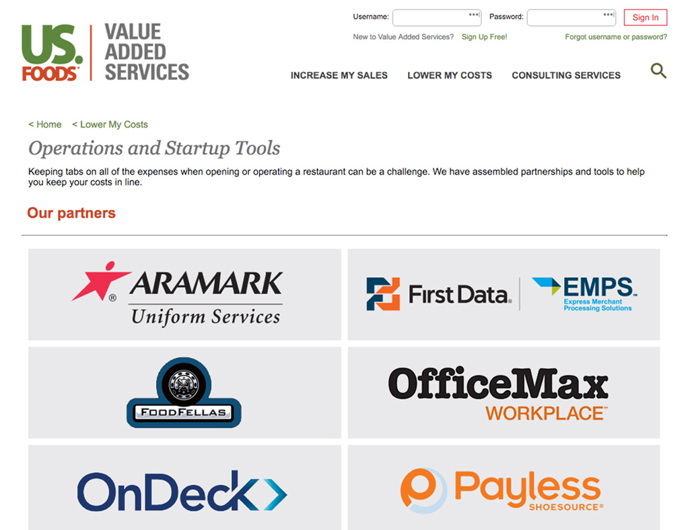

<div class="site-content">
    <div class="container">
        <h1 class="page-title">{{ page.title }}</h1>
        <p class="header-link"><a href="http://usfvalueaddedservices.com/" target="_blank">View Website &#8594;</a></p>
        <div class="info-content text-emphasis">
            <p>Web re-brand for US Foods - Value Added Services business tools and resources site.</p>
        </div>
        
        <div class="row">
            <div class="col primary">
                <h2 class="page-subtitle">My Role</h2>
                <p>One of two front-end developers on the Value Added Services re-brand, working with a small team of talented Augeo designers. I was lead developer on the internal development team.</p>
            </div>
            <div class="col secondary">
                <h2 class="page-subtitle">Technologies</h2>
                <p>The build is a complete visual refresh of a previously text heavy SharePoint site. Search functionality was introduced to provide easier user access to tools and resources.</p>
            </div>
        </div>
    </div>
</div>
